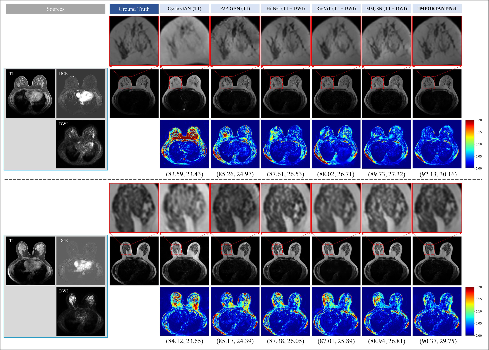

《IMPORTANT-Net: Integrated MRI multi-parametric increment fusion generator with attention network for synthesizing absent data》was accepted by the top journals of the first district of the Chinese Academy of Sciences, and the impact factor reached 18.6.

Published Thu 04 Apr 2024
We are very pleased to announce that the research paper “IMPORTANT-Net: Integrated MRI Multi-parametric Increment Fusion Generator with Attention Network for Synthesizing Absent Data” has been accepted by the information fusion journal of the first District of the Chinese Academy of Sciences and has an impact factor of 18.6.
The study proposes a new MRI data synthesis method, which utilizes advanced fusion technologies and attention mechanisms to optimize the generation of missing MRI data, performs significantly better than similar networks, and has a positive impact on downstream tasks. The successful acceptance of this important paper will bring new insights and approaches to the field of medical imaging processing, providing valuable guidance and inspiration to scientists and researchers in related fields.